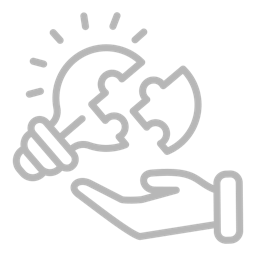
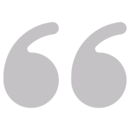

Belief-Aware Decision Transformers for Offline-to-Online Decision-Making under Partial Observability: A Geosteering Case Study
Hibat Errahmen Djecta1,2, Sergey Alyaev1, Kristian Fossum1, and Reidar B. Bratvold2
1 NORCE Research AS, Nygårdsgaten 112, 5008 Bergen, Norway 2 University of Stavanger, Kjell Arholms gate 41, 4021 Stavanger, Norway
Accepted as Spotlight at: ICML 2026 Workshop on Decision-Making from Offline Datasets to Online Adaptation: Black-Box Optimization to Reinforcement Learning, Seoul, South Korea
Many decisions must be made from noisy, indirect observations of a hidden state. Decision Transformers (DTs) learn offline policies from trajectories, but keep their hidden state implicit: hard to inspect, calibrate, or adapt online. Classical filters give interpretable beliefs, but estimate them separately from the decision, creating a mismatch between what is estimated and what is useful.
Key challenges:

Hidden state implicit inside the sequence model
→ A belief head makes the decision-relevant state explicit: predicted distances to the reservoir boundaries. See §3
Belief estimation decoupled from decision quality
→ Belief and action are trained jointly in one model, and the action head is conditioned on the belief. See §3
Cautious offline-to-online adaptation needed
→ At deployment, correct only the belief: decision quality is restored without retraining. See §4
Tap a challenge to see how the model addresses it.
Our idea:
Make hidden state explicit inside a single offline DT: a structured belief head feeding an action head, trained jointly.
2
Formulation
In geosteering, the agent operates with uncertain and partially observed geological information, receiving noisy sensor signals while its decisions influence future measurements and well placement. This interaction naturally fits a Partially Observable Markov Decision Process (POMDP), which captures both hidden subsurface states and their evolution under action. This structure is consistent with embodied world models, where an agent must infer latent dynamics and act based on how its decisions shape future observations.
𝒫 = (, , , , , , )
Reservoir top/ bottom boundaries and formation properties.
Steering commands issued during drilling
Determines how the well position evolves after an action
Measures drilling quality
Sensor readings such as gamma-ray logs
Maps latent geological states to noisy observations produced by sensors.
Encodes the importance of future rewards and long-horizon steering outcomes.
Hover or tap a symbol in 𝒫, or a chevron, to link the two.
3
Approach
Coupled Two-Head
Explore the model
Click any block in the diagram to see what it does, or press Play forward pass to step through it. Pick a variant below to see what the action head receives.
We compare 4 variants that differ only in what the action head sees.
Select one: the diagram above and the results below follow.
Solid arrow = feeds the action head · faded = computed but not used by the action
4
Results
Highlight:
Val. action MSE ↓ lower is better
Reservoir Contact Ratio (RCR) ↑ higher is better
Boundary violations ↓ lower is better
Conditioning the action on the predicted belief (Coupled) gives the best decisions, with the highest Reservoir Contact Ratio (RCR) and the fewest boundary violations. Simply adding the belief as an auxiliary task (Parallel) barely improves on the plain DT.
On a shifted test set (gamma-ray noise doubled), correcting only the belief at deployment restores decision quality without retraining. Coupled leads offline, but Strict overtakes as more beliefs are corrected, since its action depends entirely on the belief, so corrections translate directly into better steering.
Dots show the mean; whiskers show the spread. Hover or tap a row for details, or click it to select that variant.
Online Belief Correction
00.050.100.20
Show the numbers as a table
5
Discussion
Belief coupling is the main driver of decision quality. The Parallel model, where belief is only auxiliary, performs similarly to the baseline, while the Coupled model achieves the best RCR and fewest violations by using belief directly in the action pathway. The Strict model improves belief accuracy but loses offline decision quality because the compact belief cannot fully replace the richer hidden representation.
Key Insights
Bottleneck
Bottleneck improves calibration but reduces control quality:
The Strict model predicts belief more accurately, but relying only on the compact belief removes useful information from the richer hidden state, reducing offline performance.
Latent Context
Offline and online settings favor different designs:
Coupled performs best offline because it uses both structured belief and latent context, while Strict benefits more from online belief correction because belief updates directly affect the actions.
Which design wins?
6
Conclusion
A belief-aware Decision Transformer makes hidden, decision-relevant state explicit within an offline sequence model, keeping it interpretable and physically grounded.
Physically meaningful belief = a natural interface for offline-to-online adaptation without retraining Evidence: belief correction →

References
Chen, L., Lu, K., Rajeswaran, A., Lee, K., Grover, A., Laskin, M., Abbeel, P., Srinivas, A., Mordatch, I. Decision transformer: Reinforcement learning via sequence modeling. Advances in Neural Information Processing Systems, 34, 15084–15097 (2021).
Djecta, H. E., Alyaev, S., Fossum, K., Bratvold, R. B., Muhammad, R. B., Srivastava, A. Uncertainty-aware well placement: Simulator-verified dual-network reinforcement learning approach meets particle filters. In Computational Science – ICCS 2025 Workshops, pp. 188–202. Springer Nature Switzerland (2025a).
Djecta, H. E., Alyaev, S., Fossum, K., Bratvold, R. B., Sui, D. Geosteering through the lens of decision transformers: Toward embodied sequence decision-making. NeurIPS 2025 Workshop on Embodied World Models for Decision Making (2025b).
Gangwani, T., Lehman, J., Liu, Q., Peng, J. Learning belief representations for imitation learning in POMDPs. arXiv:1906.09510 (2019).
Kaelbling, L. P., Littman, M. L., Cassandra, A. R. Planning and acting in partially observable stochastic domains. Artificial Intelligence, 101(1), 99–134 (1998).
Kullawan, K., Bratvold, R., Bickel, J. E. A decision analytic approach to geosteering operations. SPE Drilling & Completion, (2014).
Muhammad, R. B., Srivastava, A., Alyaev, S., Bratvold, R. B., Tartakovsky, D. M. High-precision geosteering via reinforcement learning and particle filters. Computational Geosciences, (2025).
Muhammad, R. B., Alyaev, S., Bratvold, R. B. Optimal sequential decision-making in geosteering: A reinforcement learning approach. Geoenergy Science and Engineering, 258, 214304 (2026).